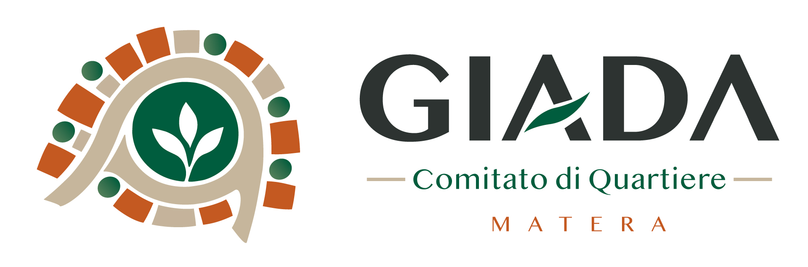
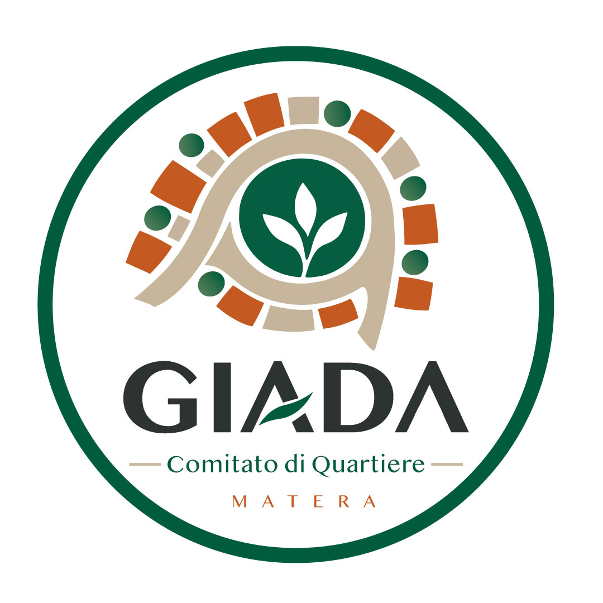

GIADA OGGI
Tutto quello che sta succedendo a GIADA.
Progetti, idee, segnalazioni, raccolte fondi, iniziative e persone che mettono qualcosa a disposizione del quartiere.
CROWDFUNDING CIVICO
Progetti da rendere possibili
A CHE PUNTO SIAMO
7 attiveProgetti e attività in corso
Costituzione ComitatoCompletato · Settembre 2026
Raccolta dati civici e residentiIn corso · 65%
Progetto di rigenerazione del parcoPreventivi e confronto con residenti
Richiesta tavolo tecnico al ComuneTerreno, drenaggi, viabilità e manutenzione
IL COMITATO
Perché nasce GIADA
Una comunità di prossimità non nasce perché tutti partecipano allo stesso modo, ma perché qualcuno comincia a mettere in connessione persone, bisogni e possibilità.
GIADA riunisce la cittadinanza attiva di Via Caduti di Nassiriya. Persone che scelgono liberamente di mettere idee, competenze o un po’ del proprio tempo a disposizione del luogo in cui abitano.
Nasce da una constatazione semplice: non sempre ciò che serve a un quartiere arriva nei tempi e nei modi che i cittadini si aspettano. Alcuni interventi spettano al Comune e continueremo a chiederli, seguirli e sollecitarli. Altre cose, invece, possiamo provare a costruirle anche noi: prenderci cura di uno spazio, finanziare un progetto, organizzare un’attività, creare occasioni per conoscersi.
Non chiediamo a tutti di partecipare nello stesso modo. C’è chi mette tempo, chi offre una competenza, chi sostiene un progetto, chi propone un’idea e chi semplicemente beneficia e rispetta ciò che viene realizzato. L’impegno di alcuni può migliorare la vita di tutti.
Sappiamo anche che la fiducia non si chiede: si costruisce. Per questo vogliamo rendere visibili progetti, raccolte fondi, decisioni, spese e risultati.
Anche altri quartieri stanno riscoprendo forme di partecipazione di prossimità. GIADA vuole farlo con un approccio contemporaneo: meno distanza tra vicini, più occasioni per incontrarsi, più capacità di fare insieme e una voce più forte quando è necessario chiedere alle istituzioni di fare la loro parte.
Non serve fare tutti. Serve che qualcuno inizi, che tutto sia trasparente e che il beneficio arrivi a tutti.
SOSTIENI GIADA
Progetti da rendere possibili
Ogni raccolta nasce da un obiettivo concreto. Puoi vedere quanto serve, quanto abbiamo raccolto, come verranno utilizzate le risorse e a che punto è il progetto.
ASCOLTO DEL TERRITORIO
Hai notato qualcosa che non va?
Inviaci una foto, raccontaci il problema e indica dove si trova. Il Comitato verificherà la segnalazione, cercherà di capire come intervenire e, quando necessario, la porterà all’attenzione del Comune.
STARE INSIEME
Occasioni per incontrarsi
Assemblee, feste, attività per bambini e ragazzi, giornate nel parco, sport e laboratori. Partecipare non significa impegnarsi sempre: a volte basta esserci.
27 SET
Partecipazione
Assemblea aperta GIADA
Presentiamo il Comitato, raccogliamo priorità e formiamo i primi gruppi di lavoro.
18:30 · Parco GIADA04 OTT
Cura del quartiere
Puliamo insieme il parco
Una mattina di cura condivisa del verde e degli spazi comuni.
09:30 · Ingresso parco18 OTT
Comunità
Prima Festa di Quartiere
Musica, attività per bambini, tavoli di vicinato e presentazione dei progetti.
17:00 · PiazzettaRETE DI VICINATO
La rete di vicinato
A pochi metri da casa può esserci qualcuno che può darci una mano — e qualcuno a cui possiamo darla noi. Qui mettiamo in contatto bisogni semplici, disponibilità e competenze del quartiere.
Organizzazione tra famiglie
Uno spazio protetto per coordinare esigenze pratiche, spostamenti e disponibilità tra genitori e famiglie verificate.
7 famiglie attiveCompiti insieme
Piccoli gruppi di studio tra bambini e disponibilità di adulti per materie specifiche.
9 famiglie interessatePrestito e scambio
Trapano, scala, idropulitrice, attrezzi da giardino: condividiamo ciò che usiamo poco.
12 oggetti disponibiliAnimali e piccole necessità
Aiuto reciproco durante weekend e brevi assenze, tra persone verificate.
5 disponibilitàCompetenze GIADA
Scopri quali capacità, esperienze e professionalità esistono già a pochi metri da casa.
31 competenze censiteArea protetta. Per attività che riguardano minori, spostamenti e dati personali, informazioni sensibili e contatti sono visibili solo agli utenti autorizzati.
OSSERVATORIO GIADA
GIADA in numeri
Il profilo del quartiere crescerà con i dati ufficiali su civici, residenti e servizi.
DATA ROOM
Dataset previsti
Civici e numerazioneIn acquisizione
Residenti per fasce d’etàDa richiedere
Servizi, fermate e dotazioniIn ricognizione
Segnalazioni geolocalizzateAttivo
TRASPARENZA
Come usiamo le risorse
Ogni euro raccolto deve poter essere seguito. Qui pubblichiamo fondi ricevuti, destinazione, spese, documenti, stato dei progetti e rendicontazione finale.
DOCUMENTI